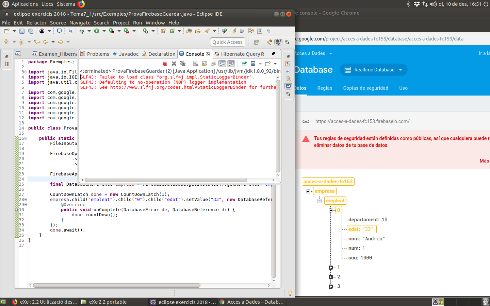
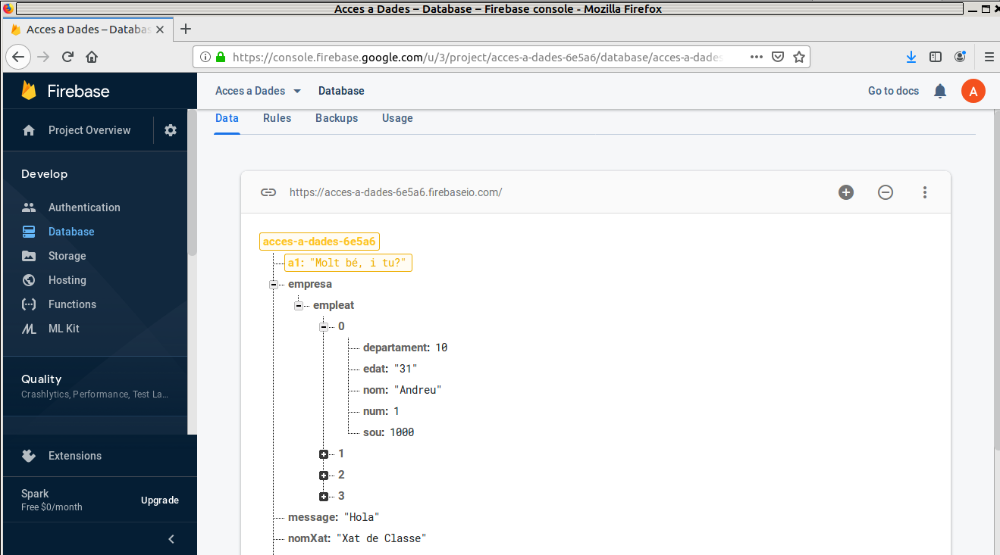
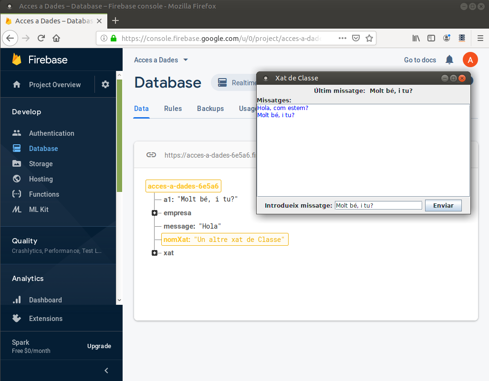
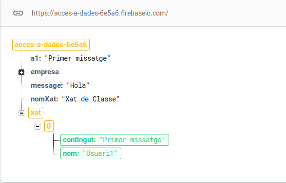
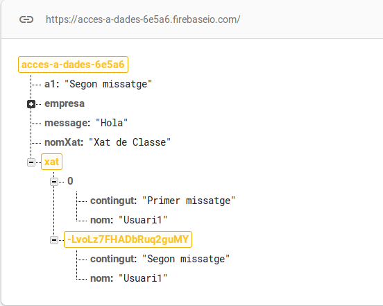
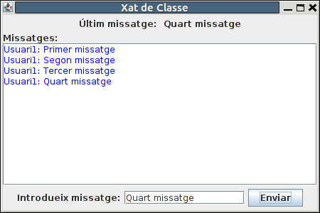

2.2.2.2 RD-Java: Accés a les dades
Guardar dades
Disposem del mètode setValue() de la referència a la dada a la que volem accedir. Accepta 2 paràmetres:
- El primer és el valor que volem introduir.
- El segon és un listener per a poder sincronitzar. Ens farà falta sincronitzar únicament en els programes mode text senzills que fem. Quan fem els gràfics no ens farà falta, i posarem null
Si per exemple vulguérem guardar en la variable a1, de forma senzilla ho faríem així (ens funcionaria en els gràfics):
refA1.setValue("Valor per a a1", null);
En l'operació de guardar si la parella clau-valor on es va a guardar existia, doncs modificarà el valor. I si no existia, la crearà.
En el cas que vulguem guardar no en l'arrel, sinó més avall en l'estructura JSON, disposem del mètode child(), que ens permet anar a un determinat fill, a l'estil de la segona manera descrita en el subpunt anterior. Per exemple si vulguérem canviar l'edat del primer empleat, l'estructura per a arribar seria: empresa --> empleat --> 0 --> edat
empresa.child("empleat").child("0").child("edat").setValue("33", null);
Si no existia abans qualsevol dels nodes de l'estructura, el crearà. Fins i tot, si no existira abans de la sentència anterior empresa, doncs crearia empresa, i dins d'ell empleat, i dins d'ell 0, i dins d'ell edat, amb el valor 33.
També podríem guardar tot un objecte, i es convertirà en estructura JSON, però ens ho deixem per a més avant.
Però com havíem dit abans, s'ha de sincronitzar amb Firebase, des del programa Java ens hem d'esperar a aquesta sincronització, si no no ens funcionarà. En el segon paràmetre ens posem un listener. Aquest exemple ja està complet:
import java.io.FileInputStream;
import java.io.IOException;
import java.util.concurrent.CountDownLatch;
import com.google.auth.oauth2.GoogleCredentials;
import com.google.firebase.FirebaseApp;
import com.google.firebase.FirebaseOptions;
import com.google.firebase.database.DatabaseError;
import com.google.firebase.database.DatabaseReference;
import com.google.firebase.database.FirebaseDatabase;
public class ProvaFirebaseGuardar {
public static void main(String[] args) throws InterruptedException, IOException {
FileInputStream serviceAccount = new FileInputStream("acces-a-dades-6e5a6-firebase-adminsdk-ei7uc-8f5d926921.json");
FirebaseOptions options = new FirebaseOptions.Builder()
.setCredentials(GoogleCredentials.fromStream(serviceAccount))
.setDatabaseUrl("https://acces-a-dades-6e5a6.firebaseio.com").build();
FirebaseApp.initializeApp(options);
final DatabaseReference empresa = FirebaseDatabase.getInstance().getReference("empresa");
CountDownLatch done = new CountDownLatch(1);
empresa.child("empleat").child("0").child("edat").setValue("33", new DatabaseReference.CompletionListener() {
@Override
public void onComplete(DatabaseError de, DatabaseReference dr) {
done.countDown();
}
});
done.await();
}
}
Recordeu que heu de canviar el nom del fitxer json i la URL per les vostres.
I aquest és el resultat d'executar-lo. A la dreta podem veure com s'està modificant la dada que preteníem:

Però com comentàvem, en el cas de les aplicacions gràfiques resulta més senzill, ja que no haurem d'esperar expressament a la sincronització, sinó que l'aplicació es queda en marxa, i per tant no hi haurà problema.
Ho practicarem en un exemple nou, on arribarem a construir un Xat, i ens servirà per a practicar totes les coses que us volem mostrar en Realtme Database de Firebase.
Aquest és l'esquelet del programa:
import java.awt.BorderLayout;
import java.awt.Color;
import java.awt.FlowLayout;
import java.awt.event.ActionEvent;
import java.awt.event.ActionListener;
import java.io.FileInputStream;
import java.io.IOException;
import javax.swing.JButton;
import javax.swing.JFrame;
import javax.swing.JLabel;
import javax.swing.JPanel;
import javax.swing.JScrollPane;
import javax.swing.JTextArea;
import javax.swing.JTextField;
import com.google.auth.oauth2.GoogleCredentials;
import com.google.firebase.FirebaseApp;
import com.google.firebase.FirebaseOptions;
import com.google.firebase.database.ChildEventListener;
import com.google.firebase.database.DataSnapshot;
import com.google.firebase.database.DatabaseError;
import com.google.firebase.database.DatabaseReference;
import com.google.firebase.database.FirebaseDatabase;
import com.google.firebase.database.ValueEventListener;
public class Pantalla_CrearXat extends JFrame implements ActionListener {
private static final long serialVersionUID = 1L;
JLabel etUltimMissatge= new JLabel("Últim missatge: ");
JLabel ultimMissatge= new JLabel();
JLabel etiqueta = new JLabel("Missatges:");
JTextArea area = new JTextArea();
JLabel etIntroduccioMissatge = new JLabel("Introdueix missatge:");
JButton enviar = new JButton("Enviar");
JTextField missatge = new JTextField(15);
// en iniciar posem un contenidor per als elements anteriors
public void iniciar() throws IOException {
JFrame pantPrincipal = this;
this.setBounds(100, 100, 450, 300);
this.setLayout(new BorderLayout());
// contenidor per als elements
//Hi haurà títol. Panell de dalt: últim missatge. Panell de baix: per a introduir missatge. Panell central: tot el xat
JPanel panell1 = new JPanel(new FlowLayout());
panell1.add(etUltimMissatge);
panell1.add(ultimMissatge);
getContentPane().add(panell1, BorderLayout.NORTH);
JPanel panell2 = new JPanel(new BorderLayout());
panell2.add(etiqueta, BorderLayout.NORTH);
area.setForeground(Color.blue);
JScrollPane scroll = new JScrollPane(area);
panell2.add(scroll, BorderLayout.CENTER);
getContentPane().add(panell2, BorderLayout.CENTER);
JPanel panell3 = new JPanel(new FlowLayout());
panell3.add(etIntroduccioMissatge);
panell3.add(missatge);
panell3.add(enviar);
getContentPane().add(panell3, BorderLayout.SOUTH);
setVisible(true);
enviar.addActionListener(this);
FileInputStream serviceAccount = new FileInputStream("acces-a-dades-6e5a6-firebase-adminsdk-ei7uc-8f5d926921.json");
FirebaseOptions options = new FirebaseOptions.Builder()
.setCredentials(GoogleCredentials.fromStream(serviceAccount))
.setDatabaseUrl("https://acces-a-dades-6e5a6.firebaseio.com").build();
FirebaseApp.initializeApp(options);
// Exemple de listener de lectura única addListenerForSingleValue()
// Per a posar el títol. Sobre nomXat
// Exemple de listener de lectura contínua addValueEventListener()
// Per a posar l'últim missatge registrat. Sobre a1
// Exemple de listener d'una llista addChildEventListener()
// Per a posar tota la llista de missatges. Sobre xat
}
@Override
public void actionPerformed(ActionEvent e) {
if (e.getSource() == enviar) {
// Exemple de guardar dades sense haver d'esperar per ser una aplicació gràfica
// Per a guardar dades. Sobre a1, i despŕes sobre la llista xat
}
}
}Recordeu que heu de canviar el nom del fitxer json i la URL per les vostres. Ho podeu copiar de l'exemple anterior
I aquest és el programa principal:
import java.io.IOException;
public class CrearXat {
public static void main(String[] args) throws IOException {
final Pantalla_CrearXat finestra = new Pantalla_CrearXat();
finestra.iniciar();
}
}Observeu que ja tenim col·locades en l'anterior programa les dades de connexió:
FileInputStream serviceAccount = new FileInputStream("acces-a-dades-6e5a6-firebase-adminsdk-ei7uc-8f5d926921.json");
FirebaseOptions options = new FirebaseOptions.Builder()
.setCredentials(GoogleCredentials.fromStream(serviceAccount))
.setDatabaseUrl("https://acces-a-dades-6e5a6.firebaseio.com").build();
FirebaseApp.initializeApp(options);
I torne a insistir en què heu de canviar la referència al fitxer JSON i la URL.
Per a guardar les dades, en aquest exemple de moment guardarem en la clau de Firebase a1 en el moment de apretar el botó de baix d'Enviar. No farà falta muntar cap listener per veure si ja hem acabat, ja que el programa continua en marxa.
public void actionPerformed(ActionEvent e) {
if (e.getSource() == enviar) {
// Exemple de guardar dades sense haver d'esperar per ser una aplicació gràfica
// Per a guardar dades. Sobre a1, i despŕes sobre la llista xat
final DatabaseReference refA1 = FirebaseDatabase.getInstance().getReference("a1");
refA1.setValue(missatge.getText(), null);
}
}
}Observeu que ara queda molt senzilla la sentència de guardar, i no ha fet falta ficar cap listener en el segon paràmetre, sinó null, per estar en una aplicació gràfica:
refA1.setValue(missatge.getText(), null);El resultat seria aquest, on es veu la modificació de la dada que volíem:

Recuperar dades
La lectura de dades és més complicada que l'escriptura. És en bona part per culpa de la "sincronització" de les dades que obtenim. Per això no existeix un mètode tan senzill com el getValue(). La lectura s'ha de muntar sempre amb Listeners, que es queden escoltant si hi ha alguna actualització de la dada registrada. Recordeu que és de la dada registrada, no de tota la Base de Dades.
Podem muntar dos tipus de Listeners, però el seu funcionament serà similar
- Els que només escolten per a llegir les dades al principi, i no esperaran per a posteriors canvis en les dades (i per tant no consumiran tants recursos): addListenerForSingleValueEvent()
- Els que es queden escoltant tota l'estona: addValueEventListener()
En ambdos casos obtenim com a paràmetre un DataSnapshot (còpia) de la dada registrada. I d'aquest tipus, DataSnapshot, sí que tenim el mètode getValue() per a accedir a la dada. Ambdós tipus de Listeners tenen un tractament absolutament similar, únicament amb la diferència abans esmentada que el segon està sempre escoltant, i el primer només escolta una vegada al principi.
El mètode getValue() admet un paràmetre que serà la classe del tipus que volem obtenir. Podem posar les següents:
- String.class, i aleshores el que obtenim s'interpretarà com un String
- Double.class, i s'interpretarà com un número real de doble precisió
- Boolean.class, i s'interptretaràcom un valor booleà
- També es poden posar classes per a obtenir tot un objecte (Map) i per a una llista (List). Fins i tot es podria arribar a posar una classe definida per nosaltres. Però amb els anteriors nosaltres en tindrem prou
addListenerForSingleValue()
En aquest primer exemple anem a agafar una única vegada la dada que ens interessa, i per tant utilitzarem addListenerForSingleValueEvent(). Ens servirà per a posar el títol de l'aplicació, i ho farem consultant la clau nomXat que haurà d'estar creada prèviament des del mateix entorn de Firebase.

Modificarem el fragment de programa marcat pel comentari, i el que fem és esperar per a llegir només una vegada.
// Exemple de listener de lectura única addListenerForSingleValue()
// Per a posar el títol. Sobre nomXat
final DatabaseReference nomXat = FirebaseDatabase.getInstance().getReference("nomXat");
nomXat.addListenerForSingleValueEvent(new ValueEventListener() {
@Override
public void onDataChange(DataSnapshot dataSnapshot) {
pantPrincipal.setTitle(dataSnapshot.getValue(String.class));
}
@Override
public void onCancelled(DatabaseError error) {
}
});
Aquest és el resultat, i quan l'executeu observareu que tarda un poc en mostrar el títol. És perquè ho està llegint de Firebase.

addValueEventListener()
Anem a veure ara un exemple per a l'altre mètode, el addValueEventListener(), que és el que es queda escoltant tota la estona
Concretarem el que farem és escoltar tota la estona per si es produeix algun canvi en la clau a1. Si es produeix aquest canvi, modificarà el valor del JLabel ultimMissatge que està dalt.
També afegirem el missatge al JTextArea, per a que tinga apariència de xat, encara que després ho modificarem per a millorar-ho. Ho hem de col·locar on està marcat pel comentari
// Exemple de listener de lectura contínua addValueEventListener()
// Per a posar l'últim missatge registrat. Sobre a1
final DatabaseReference ultim = FirebaseDatabase.getInstance().getReference("a1");
ultim.addValueEventListener(new ValueEventListener() {
@Override
public void onDataChange(DataSnapshot dataSnapshot) {
ultimMissatge.setText(dataSnapshot.getValue(String.class));
area.append(dataSnapshot.getValue(String.class) + "\n"); // aquesta línia després la llevarem
}
@Override
public void onCancelled(DatabaseError error) {
}
});
L'execució serà com la de la pantalla de dalt a l'esquerra. Però si es produeix algun canvi (com es mostra en la pantalla de la dreta), aquest canvi es reflectirà automàticament tant en el JLabel de dalt com en el TextArea, tal i com es mostra en la imatge de baix a l'esquerra:
|
|
 |


Com veieu ha estat molt fàcil construir una espècie de xat. Ara millorarem aquest xat.
Això sí, una vegada està en marxa el programeta del xat, per més que canviem nomXat, que es traslladava al títol de la finestra, aquest títol ja no canviarà perquè recordem que es feia una única lectura

Tractament de llistes
Per a explicar millor el tractament de llistes, crearem una altra referència a una clau que representarà una llista de missatges. Cada missatge constarà d'un nom i un contingut, i així vuerem també el tractament d'objectes.
El primer que ens haurem de definir és la referència a aquesta nova clau, que l'anomenarem xat (no està creada encara en la Base de Dades).
final DatabaseReference xat = FirebaseDatabase.getInstance().getReference("xat");
Anar afegint elements a la llista, ho podem fer a mà, posant nosaltres l'índex, ja que hem vist que la manera de representar en Firebase una llista són fills únicament amb clau, que seria el subíndex.
Per tant una manera d'afegir el primer missatge del xat, seria amb l'índex 0. Posem aquest codi quan apretem el botó (no hem llevat de moment el fet de guardar en a1, per a que mentre fem les proves es veja tot el xat):
public void actionPerformed(ActionEvent e) {
if (e.getSource() == enviar) {
// Exemple de guardar dades sense haver d'esperar per ser una aplicació gràfica
// Per a guardar dades. Sobre a1, i despŕes sobre la llista xat
final DatabaseReference refA1 = FirebaseDatabase.getInstance().getReference("a1");
refA1.setValue(missatge.getText(), null);
final DatabaseReference xat = FirebaseDatabase.getInstance().getReference("xat");
xat.child("0").child("nom").setValue("Usuari1",null);
xat.child("0").child("contingut").setValue(missatge.getText(),null);
}
}Quan apretem s'actualitzarà la Base de Dades d'aquesta manera:

Però aquesta manera d'introduir en la llista acaba per ser molt poc pràctica. Si ara anàrem a introduir un segon missatge (nom i contingut) li hauríem de posar com a índex 1. No és viable.
Podríem dur 2 polítiques per a gestionar els índex:
- Podríem portar un comptador per a saber quin índex toca inserir en cada moment, cosa també molt poc pràctica perquè si l'aplicació està instal·lada en més d'un dispositiu, podria haver col·lisió en el número d'índex.
- Podríem mirar quin és l'últim índex introduït, per a incrementar-lo en una unitat. Però açò suposa llegir de la Base de Dades, i com hem vist abans suposarà muntar un Listener, segurament dels d'un únic ús. Per tant se'ns complic la cosa. Es pot fer, però no és còmode.
Per a estalviar-nos aquesta feina, Firebase ens proporciona un métode per a afegir un nou element a una llista, el mètode push(). Introdueix un nou element a la llista, i li posa com a índex un numero generat de manera que no es repetirà mai. L'única preocupació que hem de tenir és guardar aquest índex (amb getKey()), per a poder posar-lo com a clau.
public void actionPerformed(ActionEvent e) {
if (e.getSource() == enviar) {
// Exemple de guardar dades sense haver d'esperar per ser una aplicació gràfica
// Per a guardar dades. Sobre a1, i despŕes sobre la llista xat
final DatabaseReference refA1 = FirebaseDatabase.getInstance().getReference("a1");
refA1.setValue(missatge.getText(), null);
final DatabaseReference xat = FirebaseDatabase.getInstance().getReference("xat");
String clau = xat.push().getKey();
xat.child(clau).child("nom").setValue("Usuari1",null);
xat.child(clau).child("contingut").setValue(missatge.getText(),null);
}
}
I el resultat és aquest:

Com veiem és una cadena molt llarga que no és repetirà mai.
Anem a fer una tercera inserció d'un missatge, però ara ho completarem més, i solucionarem de pas algun problemeta que podíem haver tingut.
Crearem una classe anomenada Missatge, que inclourà les propietats nom i contingut. Crearem un objecte Missatge amb uns nous valors, i veurem que el podem guardar perfectament. Per a aquest exemple segurament no valdria la pena l'esforç, però es pot veure la utilitat per a objectes més complexos.
Primer definim la classe. El millor és que el guardem com una classe nova, és a dir com a Missatge.java :
public class Missatge{
public String nom;
public String contingut;
public Missatge(){
}
public Missatge(String nom,String cont){
this.nom=nom;
this.contingut=cont;
}
}
Millor tenir també els getters i setters.
Per a guardar, col·locaríem aquestes sentències entre les accions del clic del botó, com en les altres ocasions. Observeu com ara ni tan sols ens fa falta guardar en una variable el getKey(), ja que es fa tot només en una operació:
public void actionPerformed(ActionEvent e) {
if (e.getSource() == enviar) {
final DatabaseReference refA1 = FirebaseDatabase.getInstance().getReference("a1");
refA1.setValue(missatge.getText(), null);
final DatabaseReference xat = FirebaseDatabase.getInstance().getReference("xat");
Missatge m = new Missatge("Usuari1",missatge.getText());
xat.push().setValue(m,null);
}
}El resultat seria el mateix que en l'ocasió anterior:

Ara només ens falta el tractament de lectura de les llistes.
addChildEventListener()
Podríem muntar un Listener com en les altres ocasions, però ara disposarem d'uns altres Listeners que se'ns acoplen millor ja que s'activen quan hi ha modificacions en algun element de la llista. En l'exemple només utilitzarem el de creació d'un nou element, però com veurem també podríem utilitzar els moments de supressió o modificació d'elements.
Es tracta del Listener ChildEventListener, i hem d'utilitzar el mètode addChildEventListener() sobre la llista. Voldrà la implementació dels mètodes: onChildAdded(), onChildChanged(), onChildRemoved() i onChildMoved(). Però com comentàvem ara només utilitzarem la de creació d'un nou element, i senzillament el mostrarem en el TextView.
Al dataSnapshot arriba únicament l'element introduït, modificat o esborrat, no tota la llista. Per tant és molt còmode. També arriba una referència a l'element anterior com a segon paràmetre, per si hem de fer algun tractament. Açò ens substituirà l'escriptura que féiem abans del TextArea (a mi m'havia quedat en la línia 101). Per tant llevem aquesta línia:
area.append(dataSnapshot.getValue(String.class) + "\n"); // aquesta línia després la llevaremI posem el següent on queda marcat pel comentari.Així ens quedarà un xat més "professional"
// Exemple de listener d'una llista addChildEventListener()
// Per a posar tota la llista de missatges. Sobre xat
final DatabaseReference xat = FirebaseDatabase.getInstance().getReference("xat");
xat.addChildEventListener(new ChildEventListener() {
@Override
public void onChildAdded(DataSnapshot dataSnapshot, String s) {
area.append(dataSnapshot.child("nom").getValue(String.class) + ": "
+ dataSnapshot.child("contingut").getValue(String.class) + "\n");
}
@Override
public void onChildChanged(DataSnapshot dataSnapshot, String s) {
}
@Override
public void onChildRemoved(DataSnapshot dataSnapshot) {
}
@Override
public void onChildMoved(DataSnapshot dataSnapshot, String s) {
}
@Override
public void onCancelled(DatabaseError databaseError) {
}
});
Si executem aquest programa, tenint només en el clic del botó l'addició d'un element a la llista i aquest Listener anterior, veurem que inicialment ens apareixeran tots els elements de la llista. Això és perquè considera que inicialment s'afegeix cadascun dels elements de la llista, i en el mateix ordre en que estan definits. En aquest imatge hem aprofitat per afegir un quart missatge:
